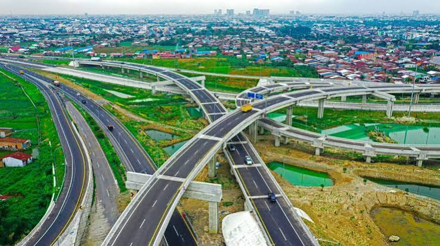
Pembangunan Fisik
Pembangunan yang hasilnya dapat dilihat secara langsung atau memiliki bentuk nyata.
Contoh: jalan, jembatan, sekolah, rumah sakit, dan transportasi umum.
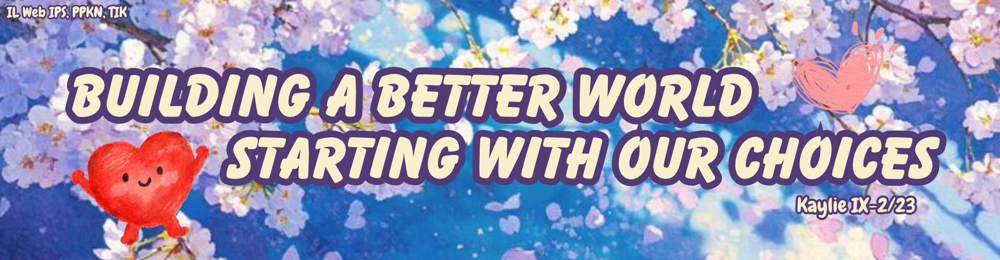
THE GLOBAL GOALS JOURNEY
Since the Sustainable Development Goals were adopted on September 25, 2015.
SECONDS
HOURS
YEARS
DAYS
Every second counts. Every action matters.
Kenali 17 tujuan SDGs dan contoh penerapannya dalam kehidupan sehari-hari!

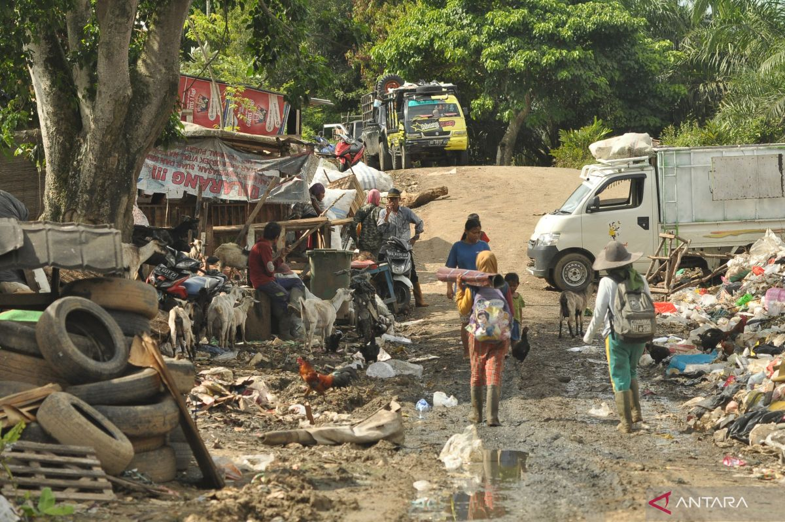

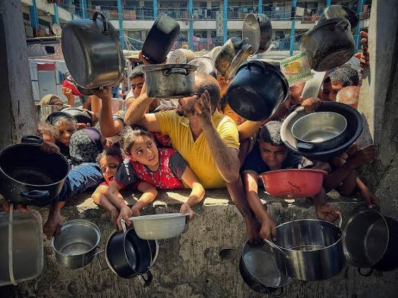

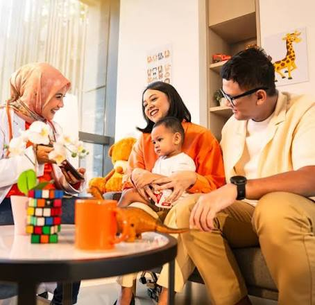

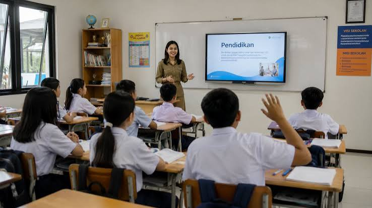

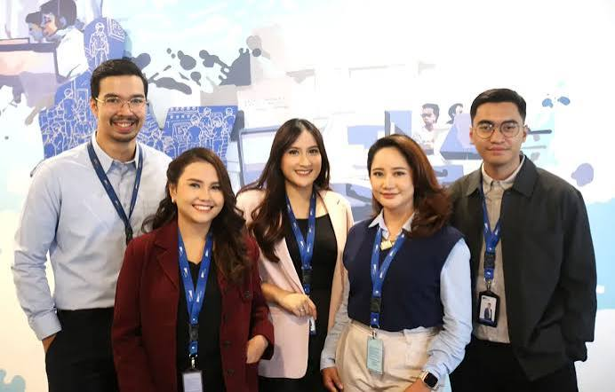


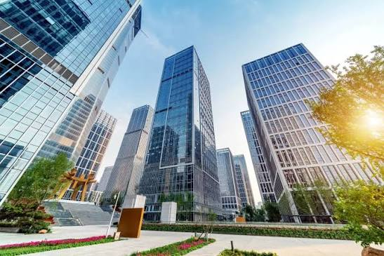

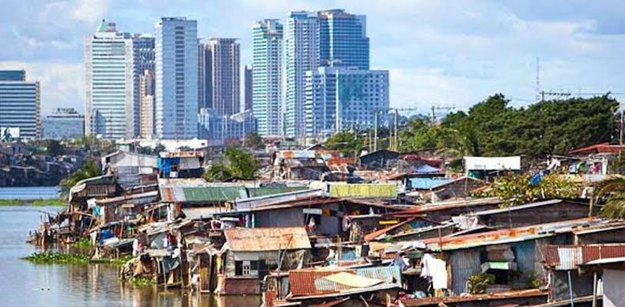

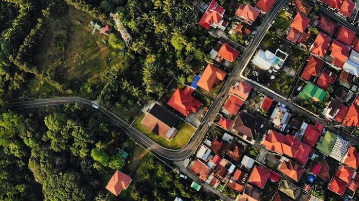


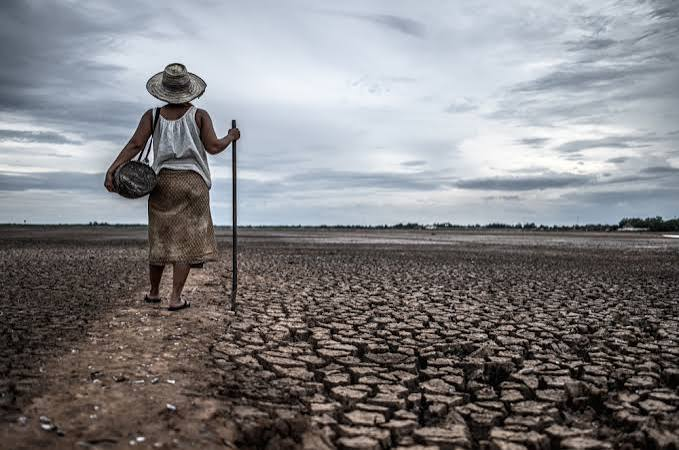

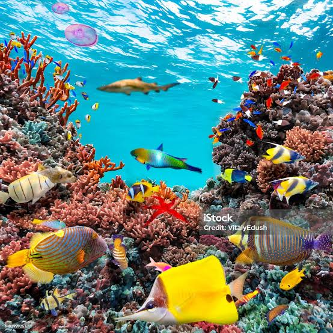

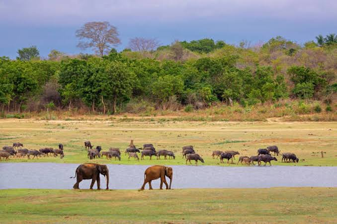

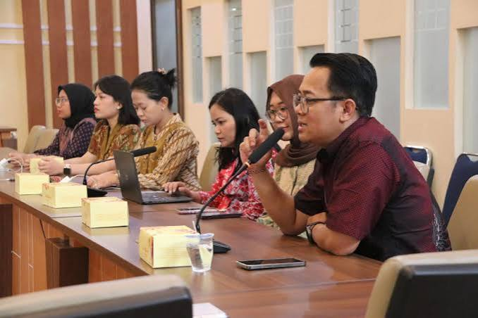

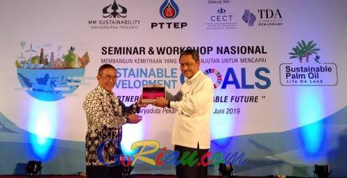
Sustainable Development Goals (SDGs) merupakan 17 tujuan pembangunan berkelanjutan yang dibuat untuk menciptakan dunia yang lebih baik, adil, dan berkelanjutan.
Agenda 2030 untuk Pembangunan Berkelanjutan, yang diadopsi oleh seluruh negara anggota Perserikatan Bangsa-Bangsa pada tahun 2015, menyediakan cetak biru bersama demi perdamaian dan kemakmuran bagi manusia serta planet ini, baik untuk saat ini maupun masa depan. Inti dari agenda ini adalah 17 Tujuan Pembangunan Berkelanjutan (SDGs), yang merupakan seruan mendesak untuk bertindak bagi semua negara—baik negara maju maupun berkembang—dalam sebuah kemitraan global. Agenda ini mengakui bahwa upaya mengakhiri kemiskinan dan berbagai bentuk kekurangan lainnya harus berjalan beriringan dengan strategi untuk meningkatkan kesehatan dan pendidikan, mengurangi kesenjangan, serta memacu pertumbuhan ekonomi—semuanya dilakukan sembari menangani perubahan iklim dan berupaya melestarikan lautan serta hutan kita.
“No One Left Behind” berarti tidak seorang pun boleh tertinggal. Pembangunan harus menjangkau semua kelompok masyarakat, termasuk penyandang disabilitas, masyarakat miskin, kelompok rentan, serta penduduk di wilayah terpencil. Keberhasilan pembangunan bukan hanya dilihat dari rata-rata nasional, tetapi juga dari siapa yang memperoleh manfaat dan siapa yang masih tertinggal.
Bagaimana cara membangun kehidupan yang lebih baik tanpa merusak lingkungan dan mengurangi kesempatan generasi yang akan datang?
Mulai Belajar
Pembangunan adalah usaha yang dilakukan secara sadar dan terencana untuk meningkatkan kesejahteraan serta kualitas hidup masyarakat secara bertahap.
Pembangunan bukan hanya tentang membangun gedung, jalan, atau jembatan. Pendidikan, kesehatan, dan kesejahteraan manusia juga termasuk di dalamnya.
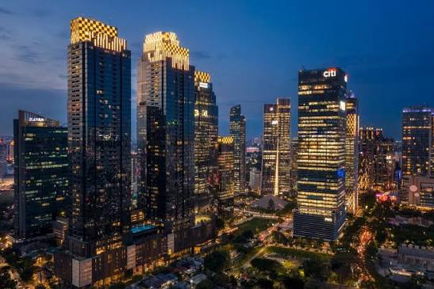
Pembangunan dapat dibedakan menjadi dua bentuk utama.

Pembangunan yang hasilnya dapat dilihat secara langsung atau memiliki bentuk nyata.
Contoh: jalan, jembatan, sekolah, rumah sakit, dan transportasi umum.
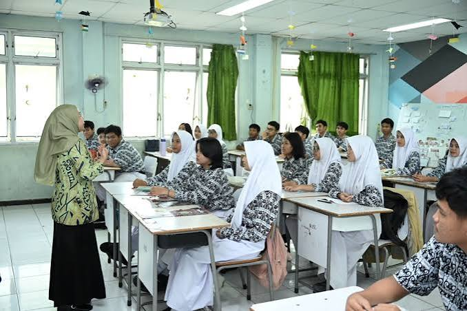
Pembangunan yang berhubungan dengan peningkatan kualitas manusia dan kehidupan masyarakat.
Contoh: pendidikan, kesehatan, keterampilan, dan kesejahteraan.
Apa yang ingin dicapai melalui pembangunan?
Membuka lapangan pekerjaan dan meningkatkan kemandirian ekonomi masyarakat.
Meningkatkan pendidikan dan kesehatan masyarakat.
Mengurangi kesenjangan pembangunan antardaerah.
Mewujudkan kehidupan yang tertib dan hukum yang adil.
Keberhasilan pembangunan dipengaruhi oleh berbagai sumber daya dan kondisi masyarakat.
Kekayaan alam seperti tanah, air, hutan, dan hasil tambang yang dapat dimanfaatkan.
Penduduk yang memiliki pengetahuan, keterampilan, dan kemampuan untuk membangun.
Dana, alat, mesin, dan teknologi yang membantu proses pembangunan.
Nilai, kebiasaan, budaya, dan kerja sama masyarakat yang memengaruhi pembangunan.
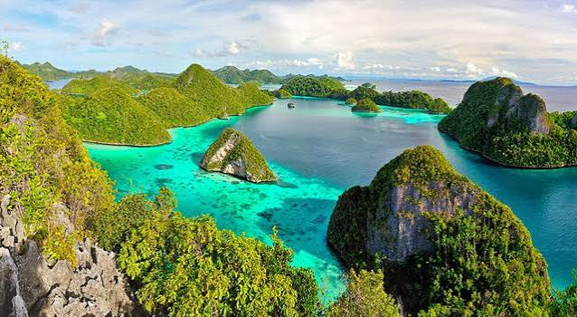
Bagaimana kita tahu bahwa pembangunan berhasil? Ada beberapa indikator yang dapat digunakan untuk melihat perkembangan suatu negara.
Menunjukkan jumlah nilai barang dan jasa yang dihasilkan suatu negara dalam periode tertentu.
Menunjukkan rata-rata pendapatan penduduk suatu negara dan membantu menggambarkan kesejahteraan ekonominya.
Mengukur kualitas hidup manusia melalui kesehatan, pendidikan, dan standar hidup.
Ketiganya membantu menunjukkan kualitas hidup masyarakat secara lebih menyeluruh.
Umur harapan hidup.
Lama sekolah dan kemampuan membaca.
Daya beli masyarakat.
Pembangunan membawa perubahan dalam kehidupan masyarakat. Namun, dampaknya tidak selalu positif.
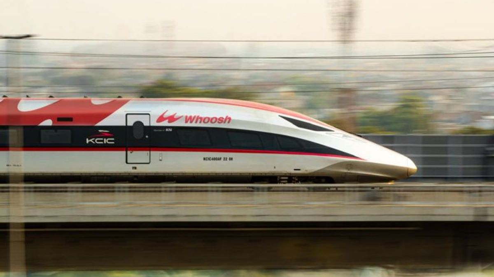
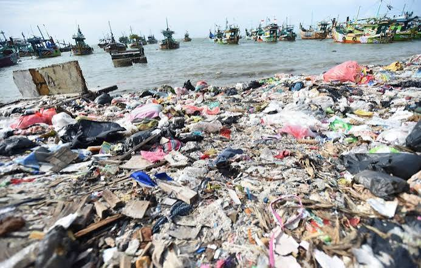
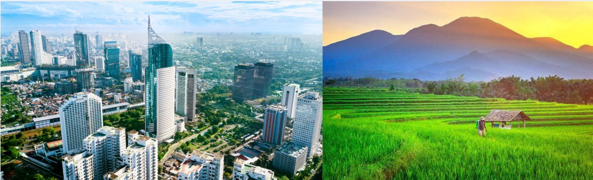
Kemajuan tidak seharusnya mengorbankan alam dan kehidupan masyarakat.
Pembangunan yang baik bukan hanya memikirkan kebutuhan manusia sekarang, tetapi juga masa depan generasi berikutnya.
Pembangunan berkelanjutan adalah pembangunan yang memenuhi kebutuhan generasi sekarang tanpa mengurangi kemampuan generasi mendatang untuk memenuhi kebutuhan mereka sendiri.
Konsep ini berasal dari Brundtland Report tahun 1987.
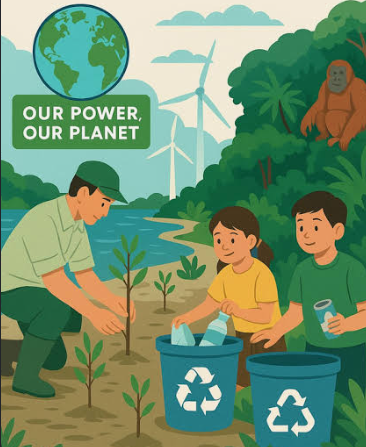
Pembangunan berkelanjutan harus menjaga keseimbangan antara tiga aspek berikut.
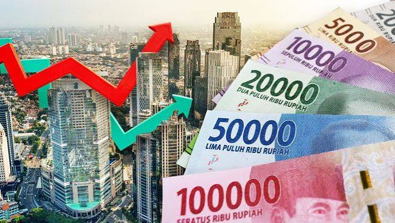
Mendorong pertumbuhan ekonomi dan meningkatkan kesejahteraan masyarakat.
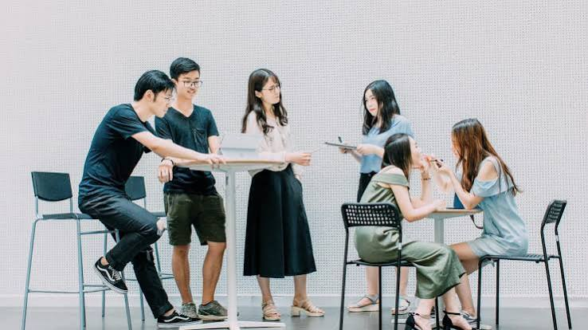
Menciptakan kehidupan yang adil, sehat, dan memberikan kesempatan bagi semua orang.
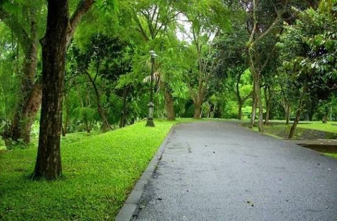
Menjaga alam dan menggunakan sumber daya secara bertanggung jawab.
SDGs merupakan kelanjutan dari tujuan pembangunan global sebelumnya, yaitu MDGs.
SDGs adalah 17 tujuan global yang dibuat oleh Perserikatan Bangsa-Bangsa (PBB) untuk mengatasi berbagai masalah dunia dan menciptakan kehidupan yang lebih baik bagi semua orang.
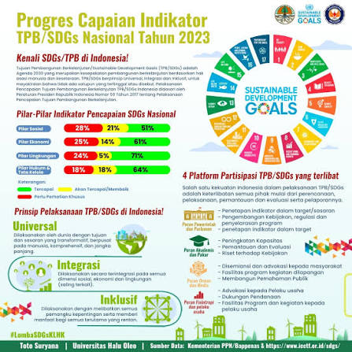
SDG 1–5
Berfokus pada kesejahteraan manusia, seperti pengentasan kemiskinan, kesehatan, dan pendidikan.
SDG 7–11
Berfokus pada energi, pekerjaan, industri, inovasi, dan pembangunan wilayah.
SDG 6, 12–15
Berfokus pada air bersih, konsumsi bertanggung jawab, iklim, laut, dan ekosistem darat.
SDG 16–17
Berfokus pada perdamaian, keadilan, kelembagaan, dan kerja sama.
Indonesia juga melakukan berbagai upaya untuk mendukung tercapainya tujuan SDGs.

Program Kartu Indonesia Pintar (KIP) dan Jaminan Kesehatan Nasional (JKN/BPJS).
Pemberdayaan UMKM, pengurangan kemiskinan, dan pembangunan infrastruktur daerah.
Pemulihan hutan mangrove, pengurangan sampah plastik, dan peralihan energi.
Pembangunan berkelanjutan bukan hanya tugas pemerintah. Kita sebagai pelajar juga bisa ikut berperan.
Matikan lampu dan alat elektronik saat tidak digunakan.
Gunakan botol minum dan tas belanja yang dapat dipakai ulang.
Hargai orang lain dan ciptakan lingkungan yang aman.
Menghargai dan mendukung produk buatan masyarakat sekitar.
Setiap tindakan kecil dapat membawa perubahan. Dengan bekerja sama, kita bisa menciptakan dunia yang lebih adil, sejahtera, dan lestari.
Kembali ke Atas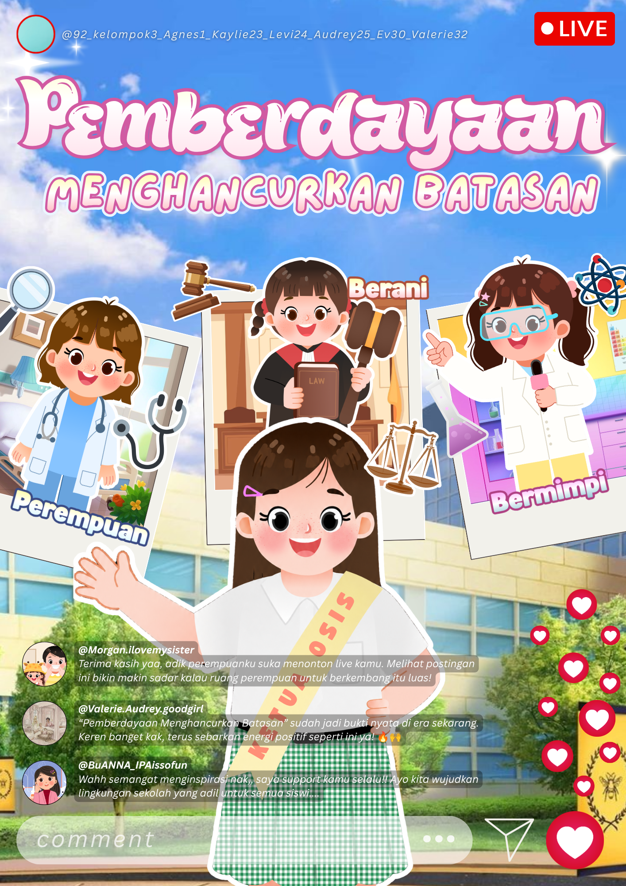
credits: kelompok 3 dari 92
Menggunakan barang dengan bijak, mengurangi sampah, dan tidak membeli sesuatu hanya karena mengikuti tren. Kebiasaan kecil ini bisa membantu menjaga lingkungan.
Mulai Jelajahi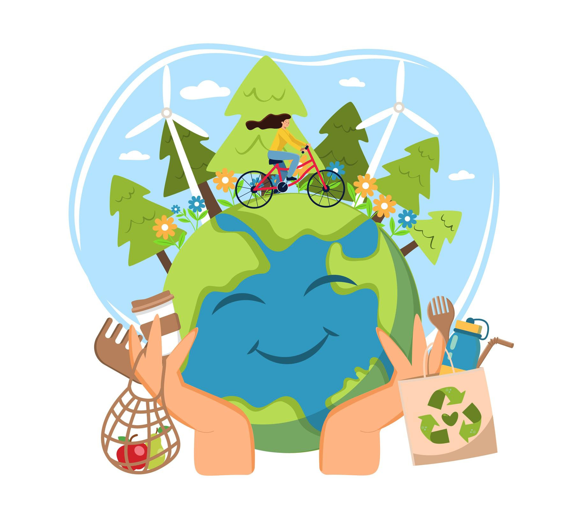
SDG 12 mengajak kita untuk menggunakan sumber daya dengan lebih bijak dan mengurangi barang yang terbuang.
Membeli barang sesuai kebutuhan dan memikirkan apakah barang tersebut benar-benar akan digunakan.
Merawat barang yang sudah dimiliki, menggunakan kembali barang yang masih layak, dan mengurangi sampah.
Membuat barang dengan memperhatikan penggunaan bahan baku, energi, dan dampaknya terhadap lingkungan.
Aku memilih SDG 12 karena hal ini sering kita temui dalam kehidupan sehari-hari. Misalnya saat membeli barang, kita perlu memikirkan apakah barang tersebut benar-benar dibutuhkan atau hanya karena terlihat lucu dan sedang populer.
Aku juga terkadang kurang teliti saat memilih barang. Akibatnya, ada barang yang jarang digunakan sampai akhirnya menumpuk dan berdebu. Dari sini, aku belajar bahwa membeli barang bukan hanya soal keinginan, tetapi juga tentang bagaimana kita menggunakannya.

Salah satu masalah yang berhubungan dengan SDG 12 adalah konsumsi berlebihan atau membeli barang melebihi kebutuhan.

Banyak orang membeli barang karena sedang mengikuti tren, melihat promosi dari influencer, atau tertarik dengan barang yang terlihat lucu meskipun sebenarnya tidak terlalu dibutuhkan.
Tertarik dengan barang yang sedang populer.
Membeli tanpa memikirkan kebutuhan terlebih dahulu.
Barang jarang digunakan dan akhirnya memenuhi ruangan.
Uang terbuang dan penggunaan sumber daya semakin banyak.
Uang digunakan untuk membeli barang yang sebenarnya tidak diperlukan. Akibatnya, pengeluaran menjadi lebih besar.
Barang yang jarang digunakan bisa memenuhi ruangan dan membuat tempat menjadi berantakan.
Semakin banyak barang diproduksi dan dibuang, semakin banyak pula bahan baku dan sumber daya yang digunakan.
Kita tidak harus berhenti membeli barang. Yang penting adalah belajar membedakan kebutuhan dan keinginan.
Ada beberapa cara sederhana yang bisa dilakukan untuk mengurangi kebiasaan membeli barang secara berlebihan.
Catat barang yang memang dibutuhkan sebelum pergi berbelanja.
Batasi uang untuk membeli barang agar pengeluaran tetap terkontrol.
Jangan langsung membeli barang yang sedang viral. Beri waktu untuk memikirkan kegunaannya.
Gunakan dan rawat barang dengan baik agar tidak cepat rusak dan harus membeli yang baru.
Coba periksa beberapa pertanyaan ini sebelum memutuskan untuk membeli barang.
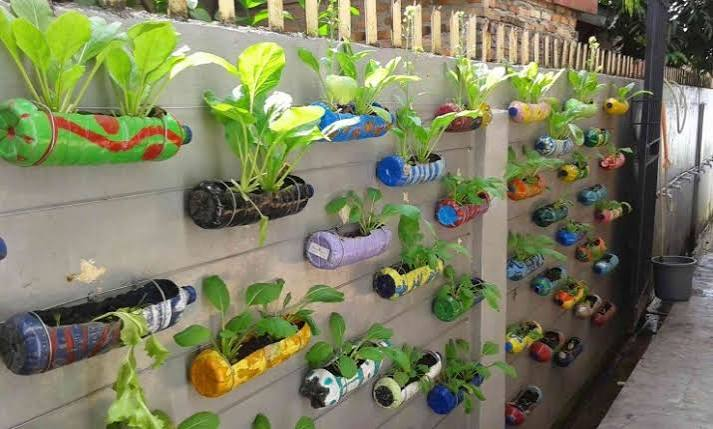
Barang bekas yang masih layak dapat digunakan kembali atau diolah menjadi sesuatu yang baru. Contohnya, menggunakan wadah bekas sebagai tempat alat tulis.
Namun, barang hasil daur ulang juga sebaiknya memiliki kegunaan yang jelas. Jangan sampai kita membuat barang baru yang akhirnya hanya menumpuk dan tidak digunakan.
SDG 12 memiliki beberapa target untuk mendorong kebiasaan konsumsi dan produksi yang lebih bertanggung jawab.
Menggunakan sumber daya alam secara lebih efisien dan bertanggung jawab.
Mengurangi jumlah sampah melalui pencegahan, penggunaan kembali, dan daur ulang.
Memberikan informasi agar masyarakat memahami cara hidup yang lebih berkelanjutan.
Penerapan SDG 12 juga berhubungan dengan nilai-nilai Pancasila, terutama dalam bekerja sama menjaga lingkungan.
Peduli terhadap sesama manusia dan lingkungan, karena kerusakan lingkungan juga dapat merugikan kehidupan masyarakat.
Bekerja sama dengan negara lain karena masalah lingkungan tidak dapat diselesaikan oleh satu negara saja.
Menggunakan sumber daya secara adil dan memberikan kesempatan yang seimbang bagi setiap negara untuk menjaga lingkungan.
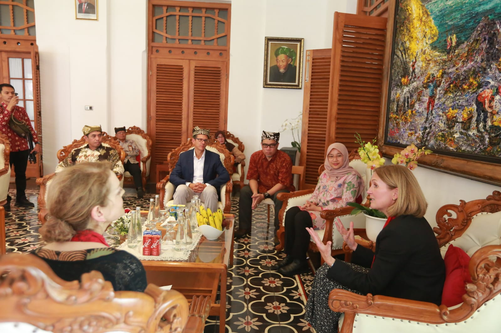
Masalah sampah dan penggunaan sumber daya tidak hanya berdampak pada satu negara. Karena itu, negara-negara perlu saling membantu dan berbagi pengetahuan untuk mencari solusi.
Misalnya, ada negara yang ingin mendapatkan keuntungan lebih besar dari penggunaan sumber daya alam, sedangkan negara lain membutuhkan bantuan untuk menjaga lingkungannya.
Indonesia dapat mengajak semua negara berdiskusi, mendengarkan pendapat setiap pihak, dan mencari kesepakatan yang adil agar tidak merugikan negara lain. Hal ini sesuai dengan sila kedua dan kelima Pancasila.
Menjaga lingkungan tidak harus selalu dimulai dari hal besar. Kita bisa melakukannya melalui kebiasaan sehari-hari.

Membawa botol minum sendiri untuk mengurangi penggunaan botol plastik sekali pakai.
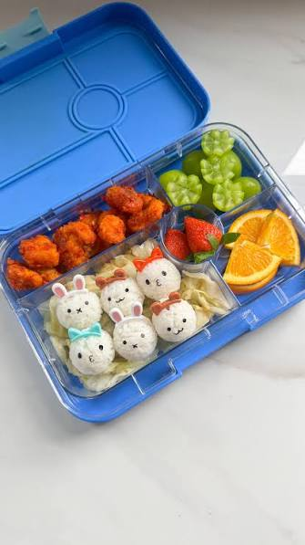
Menggunakan kotak makan sendiri agar tidak terlalu sering memakai wadah sekali pakai.
Ada banyak cara sederhana untuk menerapkan SDG 12. Dari pilihan di bawah ini, menurutmu mana yang paling efektif untuk dilakukan dalam kehidupan sehari-hari?
*Persentase dan jumlah suara merupakan data simulasi untuk keperluan edukasi, bukan hasil survei sungguhan.
SDG 12 mengingatkan kita untuk lebih bijak dalam membeli, menggunakan, dan membuat barang. Dengan mengurangi pembelian yang tidak diperlukan, merawat barang, serta mengajak orang lain untuk peduli, kita ikut membantu menciptakan lingkungan yang lebih baik.
Permasalahan sampah dan pencemaran lingkungan tidak hanya terjadi di satu negara. Karena itu, Indonesia perlu bekerja sama dengan negara lain untuk membangun kebiasaan konsumsi dan produksi yang lebih bertanggung jawab.
Jelajahi halaman ↓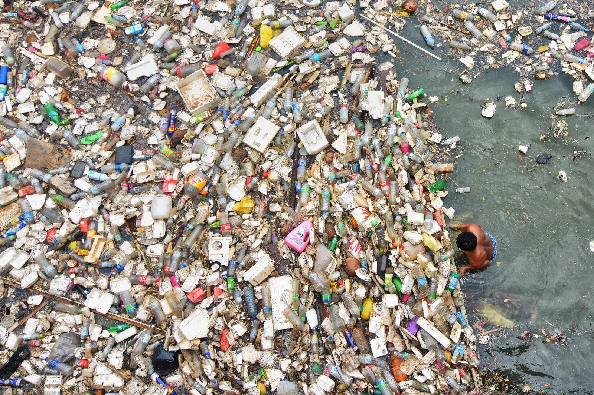
Pilih bagian yang ingin kamu baca.
SDG 12 mengajak masyarakat untuk menggunakan sumber daya dengan bijak, mengurangi sampah, dan tidak membuang makanan maupun barang secara berlebihan.
Masalah sampah plastik juga dapat berdampak ke negara lain. Plastik yang masuk ke laut bisa terbawa arus sehingga pencemaran lingkungan membutuhkan perhatian bersama.
Kerja sama yang dilakukan oleh dua negara untuk mencapai tujuan atau kepentingan bersama.
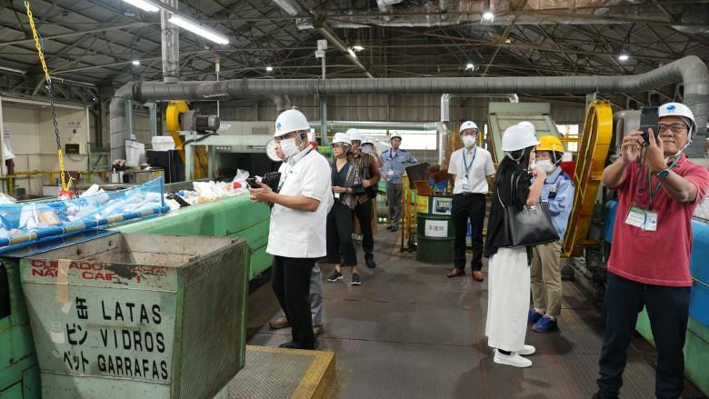
Indonesia dan Jepang menjalin kerja sama dalam bidang lingkungan, termasuk pengelolaan sampah, pencemaran laut, dan perubahan iklim.
Pada Agustus 2022, kedua negara menandatangani Memorandum of Cooperation (MoC) tentang kerja sama lingkungan. Kerja sama ini dilanjutkan melalui pertemuan dan dialog teknis untuk membahas pengelolaan sampah dan masalah lingkungan lainnya.
Kedua negara bertukar pengetahuan, membahas kebijakan, serta mengembangkan kegiatan dan teknologi pengelolaan sampah. Hal ini dapat membantu Indonesia meningkatkan pengelolaan limbah dan mendukung SDG 12.
Kerja sama yang dilakukan oleh beberapa negara dalam satu kawasan atau wilayah geografis tertentu.
Negara-negara ASEAN bekerja sama untuk mengatasi permasalahan sampah laut, terutama sampah plastik.
ASEAN membuat ASEAN Regional Action Plan for Combating Marine Debris untuk periode 2021–2025. Rencana ini mendorong pengurangan sampah plastik, perbaikan pengelolaan sampah, dan penanganan pencemaran laut.
Indonesia ikut bekerja sama dengan negara anggota ASEAN dalam upaya mengurangi sampah laut. Kerja sama ini membantu negara-negara di kawasan mengatasi masalah pencemaran yang dapat melintasi batas negara.
Periode program: 2021–2025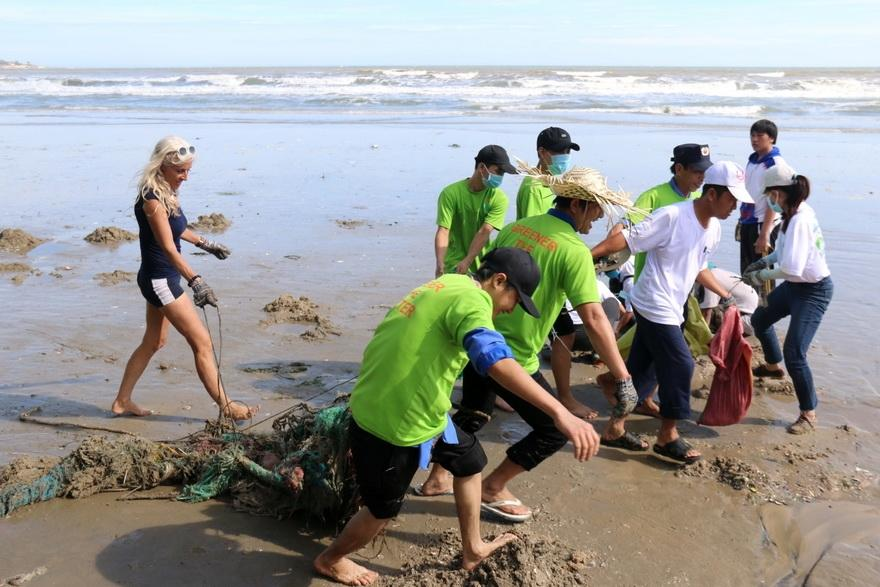
Kerja sama yang melibatkan banyak negara untuk membahas dan mengatasi kepentingan atau permasalahan bersama.
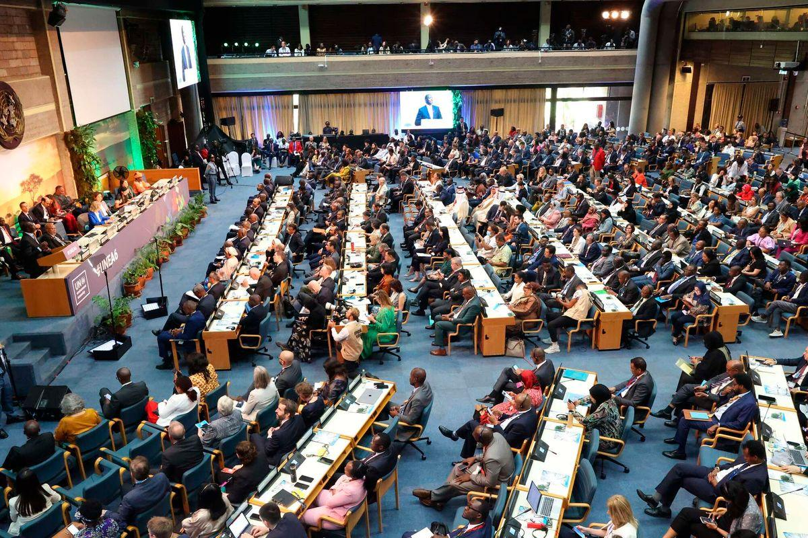
United Nations Environment Assembly (UNEA) merupakan forum pengambilan keputusan tingkat dunia di bidang lingkungan yang melibatkan negara-negara anggota PBB.
Pada UNEA-6 yang berlangsung pada 26 Februari–1 Maret 2024, negara-negara anggota menyepakati 15 resolusi untuk mendorong tindakan bersama dalam menghadapi perubahan iklim, hilangnya keanekaragaman hayati, serta polusi dan limbah.
Indonesia mendukung pembahasan dan upaya global untuk mengatasi pencemaran plastik. Indonesia juga terlibat dalam proses pembahasan kebijakan lingkungan bersama negara-negara lain.
Kerja sama ini mendorong pengelolaan sampah dan limbah yang lebih baik serta penggunaan sumber daya secara bertanggung jawab.
Hubungan dan kerja sama lintas negara dalam berbagai bidang untuk mencapai kepentingan bersama. Istilah ini bersifat luas dan dapat mencakup kerja sama bilateral, regional, maupun multilateral.
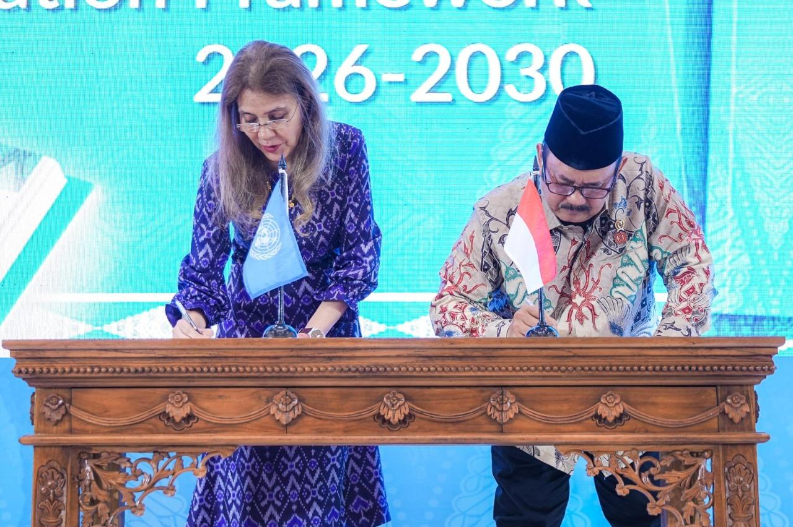
Indonesia bekerja sama dengan Perserikatan Bangsa-Bangsa (PBB) melalui kerangka kerja sama pembangunan berkelanjutan untuk mendukung pencapaian SDGs dan prioritas pembangunan Indonesia.
Pemerintah Indonesia dan United Nations Country Team atau Tim PBB di Indonesia.
Kerangka kerja sama ini menyatukan keahlian, sumber daya, dan kemitraan PBB untuk mendukung pembangunan Indonesia. Kerja sama ini juga membuka peluang dukungan pengetahuan, pendanaan, dan kemitraan untuk mencapai berbagai tujuan pembangunan berkelanjutan.
Periode: 2026–2030Indonesia tidak hanya menjadi peserta, tetapi juga ikut berkontribusi dalam upaya menjaga lingkungan.
Indonesia ikut dalam pembahasan dan kesepakatan lingkungan bersama negara lain.
Indonesia bertukar informasi, pengalaman, dan pengetahuan untuk mengatasi masalah sampah.
Indonesia ikut menyampaikan pendapat dan mendukung kebijakan untuk mengurangi pencemaran lingkungan.
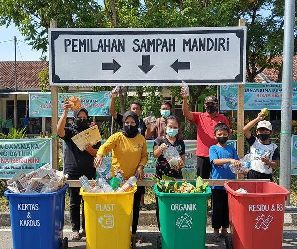
Kerja sama antarnegara dapat membantu mengatasi masalah lingkungan, tetapi perubahan juga dimulai dari kebiasaan kita sehari-hari.
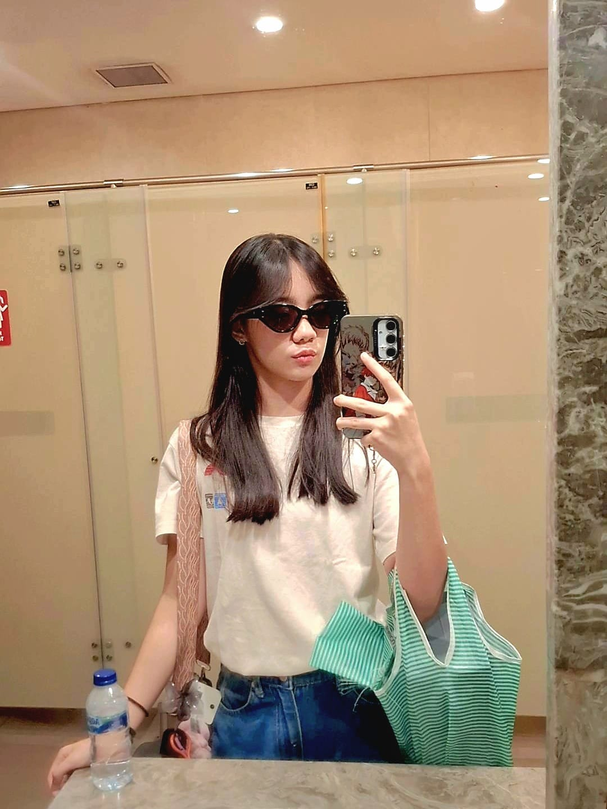
Nama Lengkap: Kaylie Scarlet Lim
Tempat & Tanggal Lahir: Jakarta, 23 Mei 2026
Zodiak: Gemini ♊
Hobi: Menari, Nonton Anime, Baca Manga
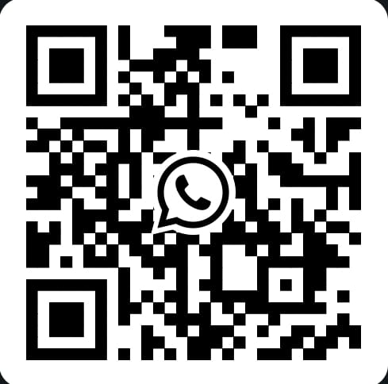
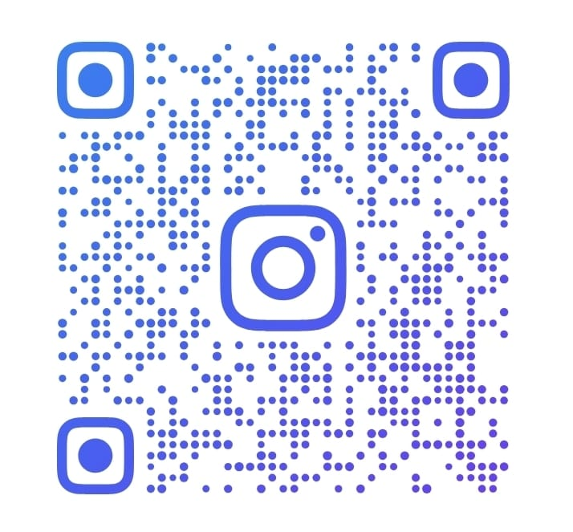
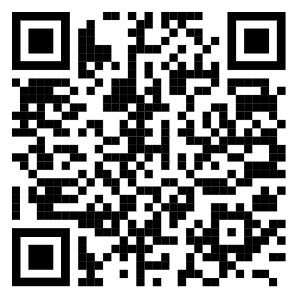
Kumpulan sumber informasi dan referensi yang digunakan dalam pembuatan website ini.
2021. Diakses pada [tanggal akses] pukul [jam akses] WIB.
Buka sumber asli2021. Diakses pada [tanggal akses] pukul [jam akses] WIB.
Buka sumber asli2021. Diakses pada [tanggal akses] pukul [jam akses] WIB.
Buka sumber asli2021. Diakses pada [tanggal akses] pukul [jam akses] WIB.
Buka sumber asli2022. Diakses pada [tanggal akses] pukul [jam akses] WIB.
Buka sumber asli2026. Diakses pada [tanggal akses] pukul [jam akses] WIB.
Buka sumber asliTanpa tahun. Diakses pada [tanggal akses] pukul [jam akses] WIB.
Buka sumber asli2025. Diakses pada [tanggal akses] pukul [jam akses] WIB.
Buka sumber asliTanpa tahun. Diakses pada [tanggal akses] pukul [jam akses] WIB.
Buka sumber asliTanpa tahun. Diakses pada [tanggal akses] pukul [jam akses] WIB.
Buka sumber asliTanpa tahun. Diakses pada [tanggal akses] pukul [jam akses] WIB.
Buka sumber asli2024. Diakses pada [tanggal akses] pukul [jam akses] WIB.
Buka sumber asliTanpa tahun. Diakses pada [tanggal akses] pukul [jam akses] WIB.
Buka sumber asli